Development report
What already works, with evidence: engine screenshots, metrics and test results. Version 0.40.0.
1. What is done
- Showcase site — a plan with live progress, a gallery, diagrams and a Download section.
- Engine choice (ADR-0001) — Unreal Engine 5 client, Rust server.
- Networking core — binary protocol, varint compression, delta snapshots, framing.
- Deterministic physics — custom trigonometry without
libm, 30 Hz, checksum. - Netcode — client prediction, reconciliation, snapshot interpolation.
- UDP transport — session token, batching, dropping corrupted packets.
- Interest management — spatial index (uniform grid).
- Sharding — consistent hashing, player migration between nodes.
- Persistence — the world and economy survive a server restart.
- Economy — market, order book, trades, production chains.
- Combat systems — shields, armor, damage types, territories and taxes.
- Renderer — CPU ray tracing, voxel planets with LOD, digging.
- Networked rendering — the client receives UDP snapshots and draws the live world from the server.
- UE5 client skeleton (C++) — the module builds and loads in the editor: fixed
uint64inUPROPERTY, abstractFInternetAddr,FColor→FLinearColor; the protocol is verified against a real server packet. - Construction scripting — a Lua-like language with a sandbox: autopilots, turrets, logistics.
- Market simulation — the economy is verified by agents: price, volume, shortage, surplus.
- Voxel editor — place, remove, paint; integrity checks and blueprints.
- Planet & space physics — inverse-square gravity near a planet, inertial flight in space; same math on server and client.
- Spawn on a planet — the player appears on land on the home planet, with terrain and gravity; server and client pick the same spot.
- Startup menu — character call sign and server selection (list plus a manual address) in the UE5 client.
- Server + client self-check — a tool boots a real server, connects a client, verifies simulation and spawn, and publishes a status for the site and launcher.
- Exit ship & walk - hold F to leave the cockpit and walk on the planet surface (WASD, jump, gravity toward the planet center); hold F again to board.
- Solar system & spawn on foot - the player spawns as a character on the ground with the ship standing nearby; 4 different planets (terran, desert, ice, gas giant) and a star fill the sky, and the horizon reads as land.
- Character graphics, weapon & build menu - a procedural figure with a walking/running animation, a hand weapon with tracers and muzzle flash (right mouse), and a build menu (B) with a block palette that places blocks on the terrain.
- Distinct planets with atmosphere & clouds - each planet type has its own landscape (dunes, craters, ridges, bands), an atmospheric halo and cumulus clouds; dry worlds have no clouds, and an airless moon has neither atmosphere nor clouds.
- Server-authoritative building - the build menu sends commands to the server; the server validates each edit (integrity, ownership, limits) and broadcasts it, and the client only renders what the server accepted, so constructions match for all players and persist.
- Launcher starts the server and joins automatically - pressing Play raises the local server and launches the game with auto-connect, so the player goes straight into the world instead of an empty menu.
- Incremental updates with integrity check - the launcher verifies each game file against a SHA-256 manifest and downloads only changed or damaged files (a patch); it no longer re-downloads the whole client.
- Fast parallel download & reliable connect - the launcher downloads in 8 parallel streams with resume, and the local server is started correctly so the game connects automatically after install.
- Server-authoritative combat - firing is resolved on the server (deterministic hit chance and damage vs shields/armour) and the shot plus hull state are replicated, so tracers and hits match for everyone.
- Visible combat: target drones - the world spawns target drones nearby; hits damage them, destroyed drones are removed on the server and on screen, so the whole combat loop is observable.
- Death & respawn, drones fight back - a destroyed player respawns on the home planet with a full hull and brief invulnerability; target drones carry a laser and return fire, and respawn at their posts so combat continues.
The client skeleton mirrors the server logic: C++ kinematics over 1 s gives z = 23.101 versus the server's 23.10086 — the same number. Details: client/README.md.
2. Engine screenshots
Every frame below is real output from the ray tracer in server/crates/render. Some are built straight from simulation state.
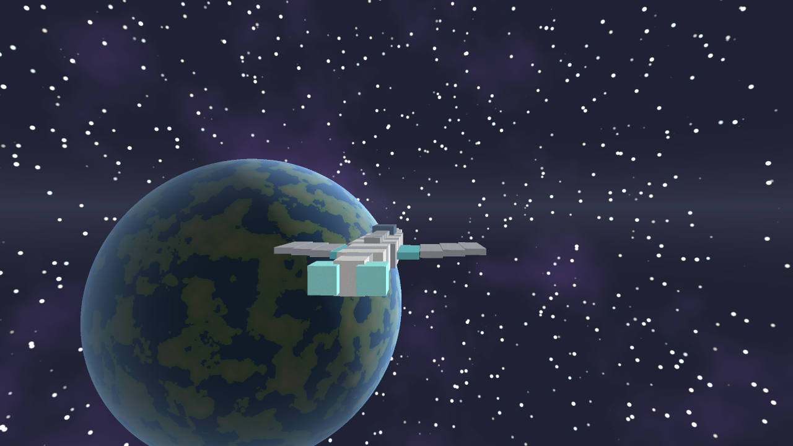
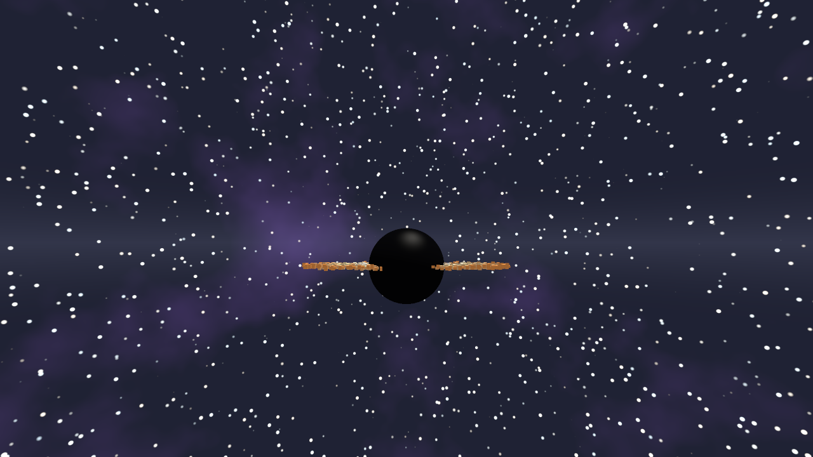
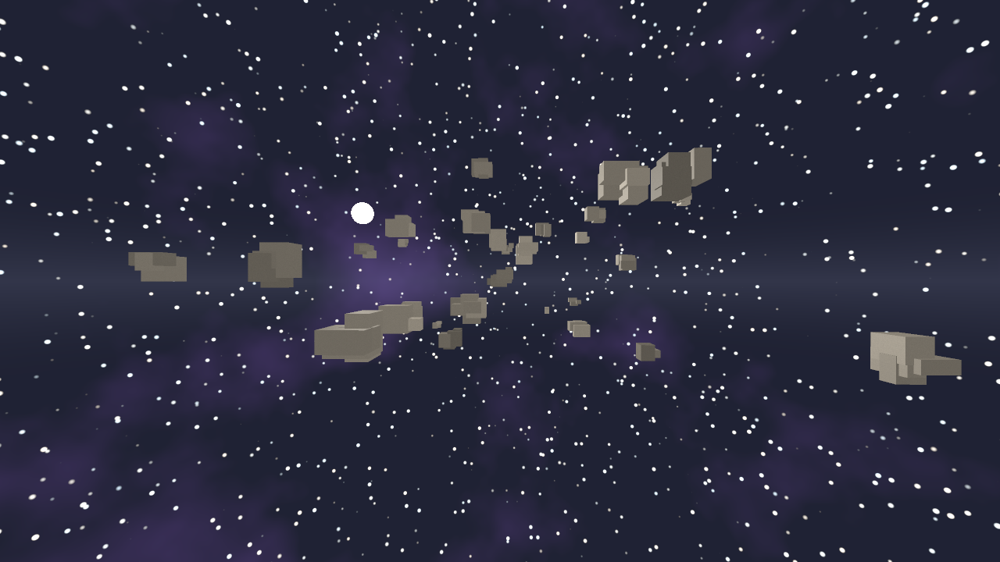
World from the simulation
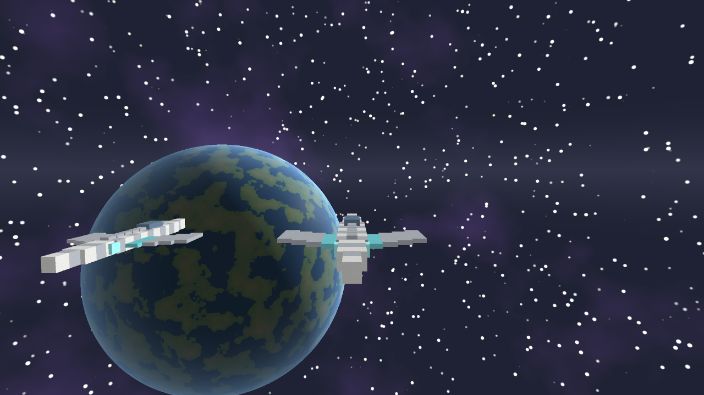
EntityState — the same state the server sends over the network. Nothing is placed by hand.Motion: 10 simulation frames
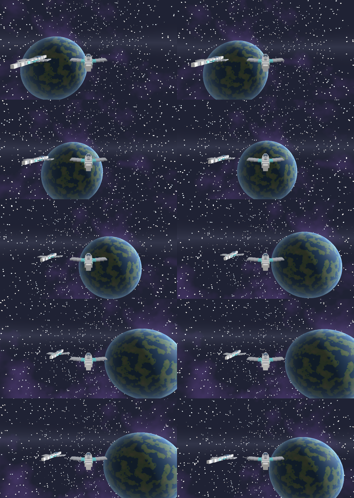
Voxel planets (Phase 1)
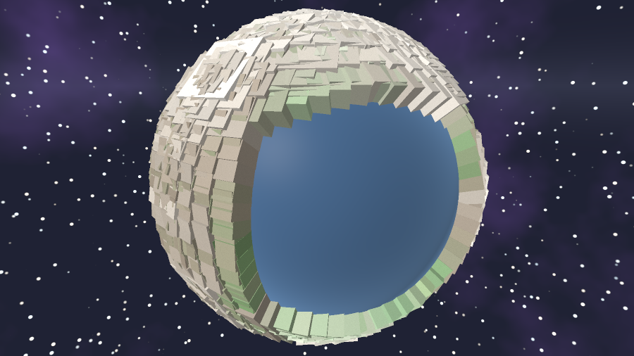
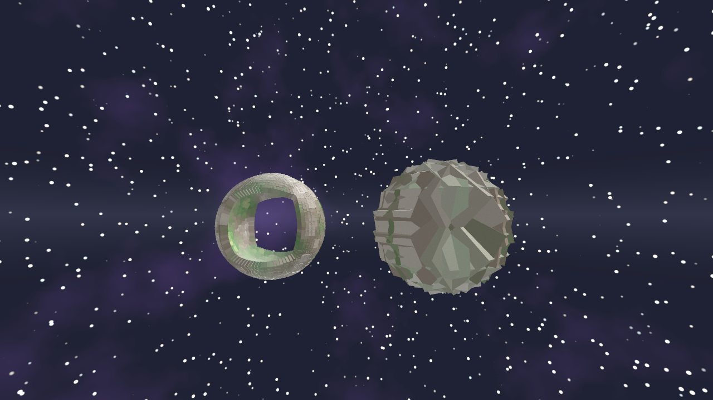
Far 4×4), on the right a detailed one (Close 24×24).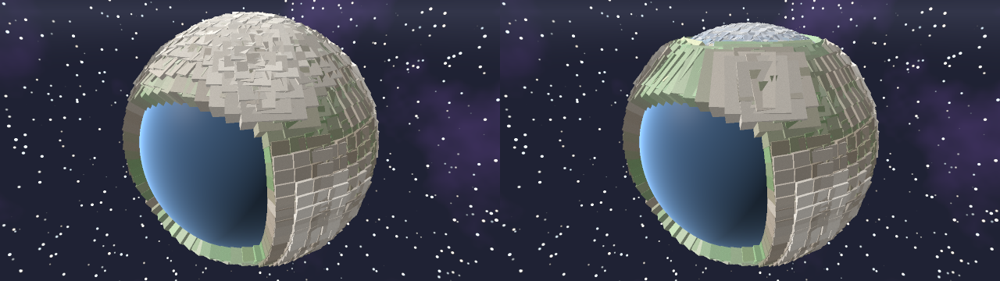
Networked rendering: a live world from the server
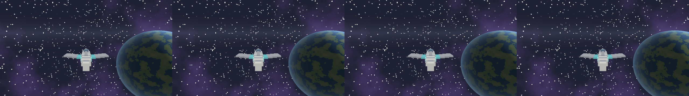
Landing on the surface
The terrain is part of the world data (sim::terrain): the server presses the ship to the surface, kills its speed and tells a soft landing from an impact.
$ cargo run -p ou-sim --bin ou-landing-demo
=== Soft landing === tick 240: altitude 15.2, speed 21.3 Flying
result: Landed, altitude 0.000, penetration 0.000000
=== Hard impact === → IMPACT at tick 15: speed 316.8
friction brakes sliding along the surfaceConstruction scripting
Players program their ships in a built-in Lua-like language: autopilots, turrets, logistics. The scripts run on the server and are sandboxed.
-- Player autopilot
local cruise = 80
function tick(state)
local s = speed()
if s < cruise then thrust(1) else thrust(0.1) end
end
tick(state)
$ cargo run -p ou-script --bin ou-script-demo
=== Autopilot === tick 12: thrust 1.00, speed 17.9
=== Turret === target close (300) → fire: YES
=== Sandbox === infinite loop stopped: step limit (200000)
deep recursion stopped (depth 64)Market simulation
The economy is verified by a running simulation: agents in three roles trade for 200 ticks, and money is not printed. The model is in docs/economy-model.md.
$ cargo run -p ou-economy --bin ou-market-sim
=== Balanced economy ===
price: min 7, max 65, VWAP 25
active ticks: 192 of 200 (96%)
money check: credits created/destroyed = 0
=== Shortage === price rises === Surplus === VWAP falls to 10Voxel editor
A player builds from voxels: place, remove, paint. The grid is sparse and integrity is checked against the core.
$ cargo run -p ou-build --bin ou-build-demo
=== Detached voxel === forbidden: detached from the core
=== Break the middle === detached parts removed: 1
=== Ship blueprint === 31 voxels, connectivity OK
=== Determinism === repeat matchesUE5 client skeleton and protocol verification
Unreal Engine 5 is installed, the C++ module builds and the editor opens a 3D scene, and the client connects to the Rust server: it receives its own id, sends input at 30 Hz and draws other players. The test harness takes a real Rust server packet and parses it with the same code as the UE5 client.
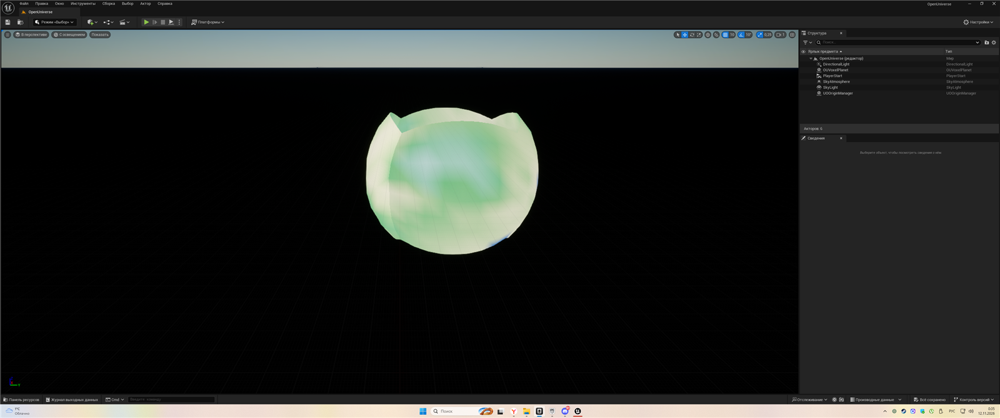
/Game/Maps/OpenUniverse: a voxel planet (cube-to-sphere, terrain from two octaves of noise, color by height — ocean → grass → snow). The scene is assembled automatically in AOUGameMode.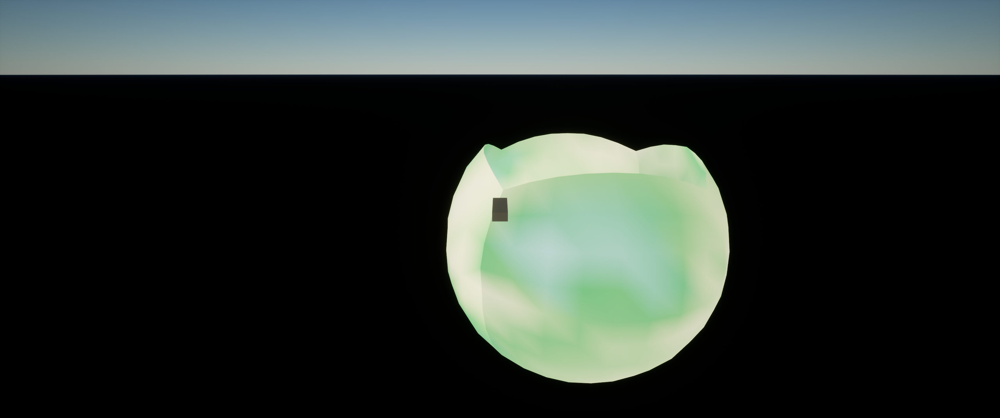
OpenUniverse.exe — a built Shipping version: it launches on a double click without installing Unreal Engine. It is installed by OpenUniverse-Game-Setup (~180 MB): shortcuts in the Start menu and on the desktop.Solar system and the player on foot
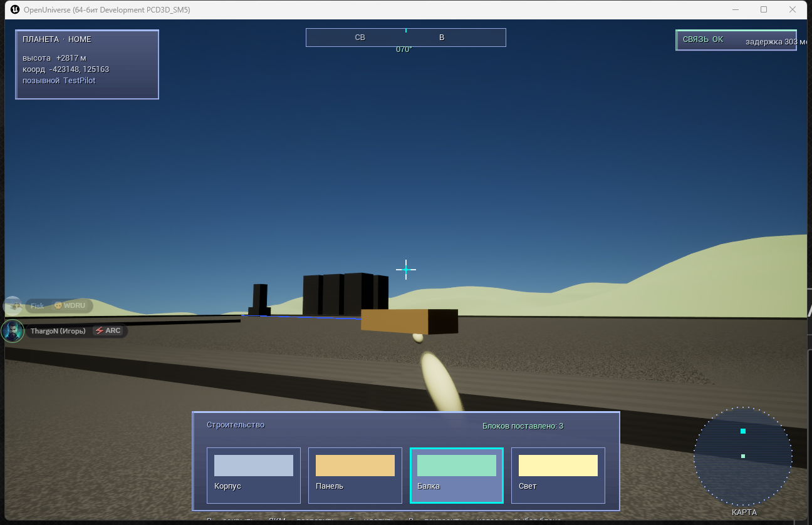
tools/test-ue.ps1): the player spawns as a character on the ground, the ship stands nearby, the horizon reads as land, and planets of the system are visible in the sky. This shot is refreshed on every test run.A solar system with 4 planets: home (terran), desert, ice and a gas giant, plus a star. The home planet has an 8 km radius, so the horizon reads as land instead of a ball in front of the camera.
$ powershell -File tools/test-client.ps1
[OK] header read, token matched
[OK] snapshot parsed · three entities in the snapshot · tick matched
[OK] id 1: pos (1169.48, 327.47, 9212.51), yaw 0.3660
[OK] id 3: pos (-5607.76, 3327.47, 24309.50), yaw 0.1220
16 checks · all checks passedPositions match the server to the centimeter, angles exactly. So the client and the server see one world.
3. Metrics
| Metric | Value |
|---|---|
| Core tests | 223 passed |
| Modules (crates) | 13 |
| Simulation tick rate | 30 Hz (149 ticks per 5 s) |
| Wire position precision | 0.1 mm (i32, ±214 km) |
| Empty delta + ack | 29 bytes |
| Traffic per player (UDP) | ≈ 202 bytes/tick |
| Zone distribution across 4 nodes | 21.8–28.2% |
| Max prediction correction | 0.006 u |
| Voxels per face (LOD Close) | 24×24 |
| Render speed (planet) | ≈ 27k px/s |
| Networked render: baseline + deltas | 1 + 236 in 8 s |
| Soft landing threshold | 60 u/s (otherwise impact) |
4. Test results
$ cargo test --workspace → 223 passed (13 crates)
protocol 16 · sim 23 · spatial 6 · net 5 · shard 9 · persist 14
economy 27 · combat 17 · render 37 · script 32 · build 15 · server 17 · client 9
$ cargo run -p ou-combat --bin ou-combat-demo
=== Hit chance (1000 shots) ===
autocannon range 1500: 97% 80% 62% 44% 31%
=== Duel: laser vs railgun ===
tick 27: shield 0 (0%), armor 0 (0%) ← destroyed
$ cargo run -p ou-economy --bin ou-market-demo
trade: seller 2 → buyer 9, 60 units at 25 (total 1500)
VWAP = 26 · Trades in the log: 2
$ cargo run -p ou-render --release -- voxel 900 506
voxel 900×506 17.44 s
$ cargo run -p ou-render --release -- dig 640 360
dig 2 frames → 1280×360 18.52 s -> render-dig.png
$ cargo run -p ou-server --bin ou-netd -- 127.0.0.1:7777 10 &
$ cargo run -p ou-render --release --bin ou-netrender -- 127.0.0.1:7777 8 4
baseline received: 1 · deltas: 236 · saved 4 frames -> render-net.png5. What's next
- Networked rendering — draw incoming UDP snapshots in real time. ✓
- Landing a ship on a voxel surface (linking physics and terrain). ✓
- Sharding: migrating state between nodes (currently routing).
- Kubernetes and autoscaling (the only Phase 3 item left).
- Lua scripting for constructions (Phase 8). ✓
- Unreal Engine 5 project skeleton. ✓ connected to the server
6. Summary
The project has gone from concept to a working Rust core: deterministic simulation, netcode with prediction, economy, combat, persistence and a custom renderer that draws voxel planets and the real world from the simulation. The plan is 52% complete.
Repository: github.com/andreyshpak2016-lgtm/open-universe
← Back to home